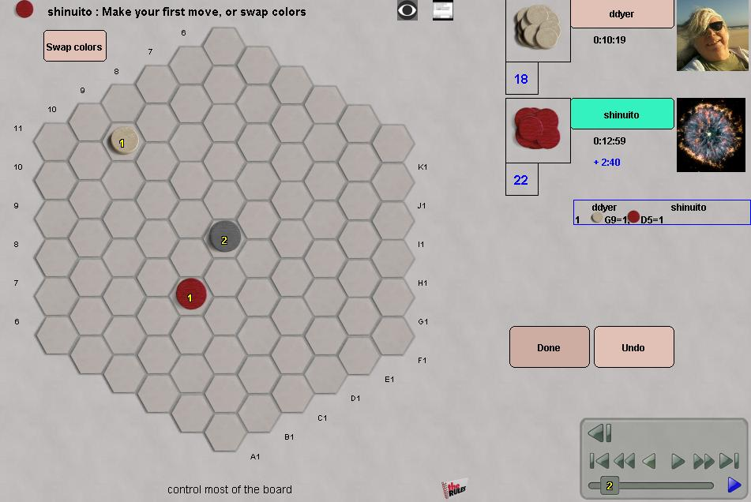

|
|
|
Tumbleweed is a two-player game. It is played on a hexhex board and a sufficient supply of stacked checkers.
A stack can "see" a hex, when they are connected by a straight line, with no stacks in between. The players take turns placing stacks of their tokens on hexes that are seen by at least one friendly stack. The height of every newly-placed stack equals the number of your stacks that see the new stack. Replacing an existing stack with a new stack is possible, as long as the new stack is taller than the previous one. This works with opponent stacks (to capture), or your own stacks (to reinforce).
Before the game, the host sets up the board and the guest decides which side they want to play. Setup consists of one stack of two neutral tokens in the central hex, and a single starting token for each player in hexes of the host's choosing.
The game ends when no more moves can be made by either player, or after two successive passes. The player who occupies or controls over half the board wins.
Initial setup
|  Here's the board at move 2. White placed the initial stones at G9 and D5. Red can either swap colors (and become white) or make the next move by placing a red stone. |
| E-Mail: | Go to BoardSpace.net home page |